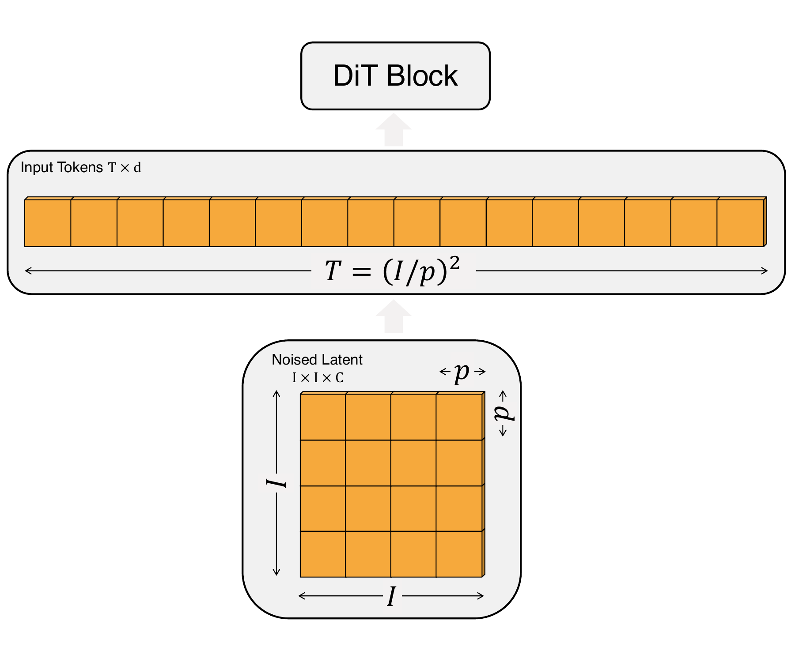
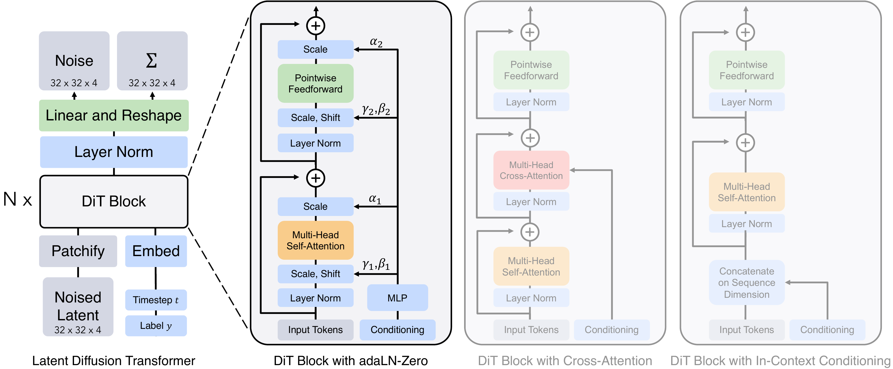
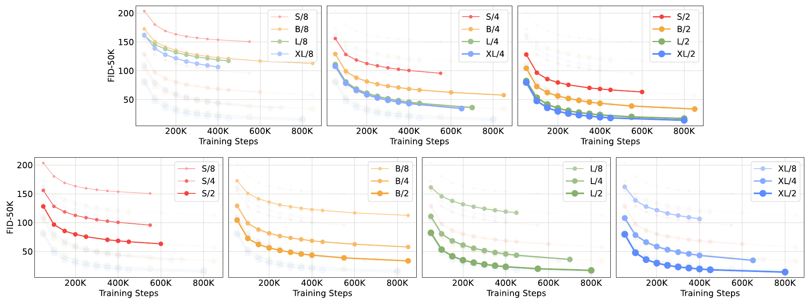
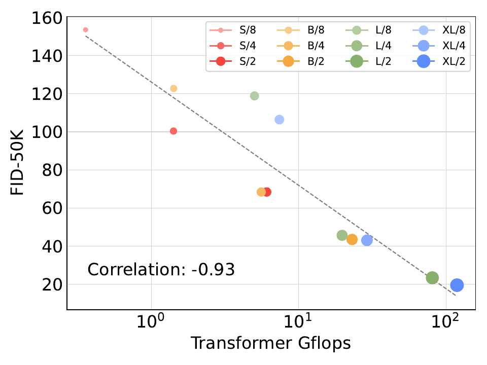
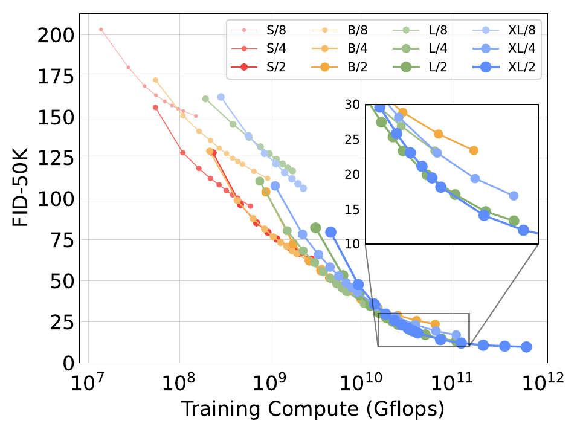
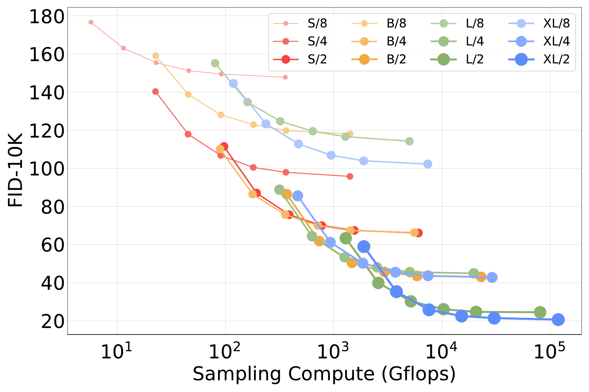
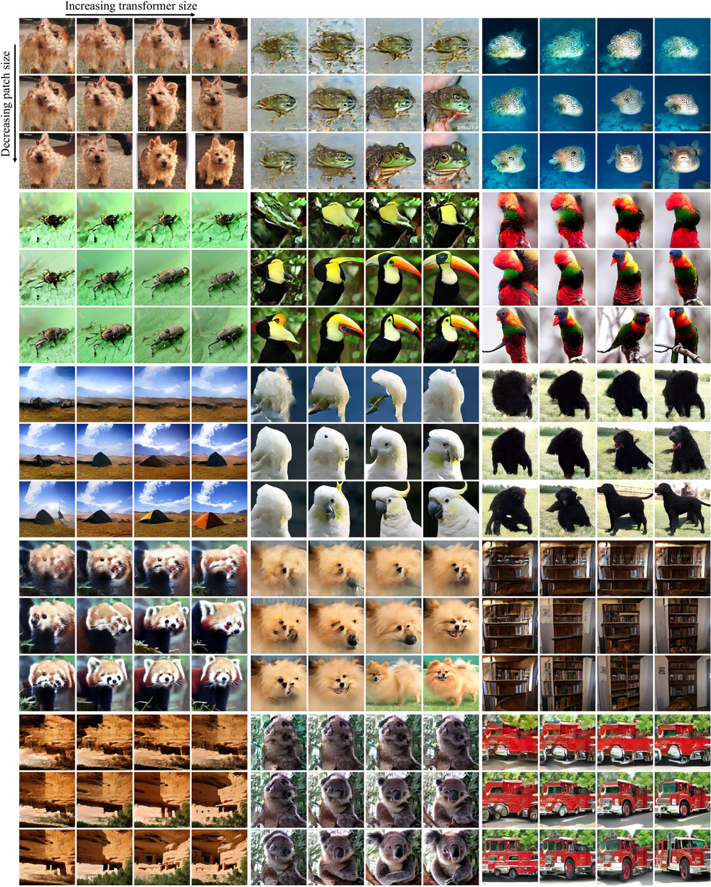

An interactive explainer
DiT: scalable diffusion models with transformers
Every state-of-the-art diffusion model in 2022 was built on a convolutional U-Net. Peebles and Xie asked the question that, in retrospect, seems obvious: does the U-Net even matter? The answer is no. Strip it out, replace it with a plain Vision Transformer that operates on latent patches, and the model gets better — not worse. DiT-XL/2 hits FID 2.27 on ImageNet 256×256, beating the previous best (LDM) at 10× fewer Gflops than ADM. More importantly, this paper laid the foundation for Sora, Stable Diffusion 3, and every modern image and video generator. Here is why.
In late 2022, diffusion models were eating image generation. ADM, GLIDE, Imagen, Stable Diffusion — all of them came with a convolutional U-Net backbone bolted on by tradition. The U-Net had been inherited from Ho et al.'s 2020 DDPM paper, which had inherited it from PixelCNN++, which had inherited it from the original 2015 medical-imaging architecture. Nobody had seriously asked whether that backbone was actually doing anything special.
Peebles and Xie asked. Their answer is brutally simple: replace the U-Net with a Vision Transformer that operates on patches of the VAE latent, condition the transformer via adaptive LayerNorm with zero-initialized residual gates, and train on the same diffusion objective. No skip connections. No multi-resolution hierarchy. No spatial inductive bias beyond positional embeddings. Just a stack of identical transformer blocks. This wins.
What's interesting is not just that it works, but how cleanly it works. DiT inherits the transformer scaling laws — performance is a tight function of Gflops, whether you get those Gflops by making the model bigger or by feeding it more tokens. There is no architectural tuning. No learning rate warmup. No weight decay. No spike-prevention tricks. You train, the loss goes down, and the FID drops in lockstep with the compute you spend. This is the paper that turned diffusion into a scaling-laws problem, and through that lens, it is the reason Sora and Stable Diffusion 3 exist.
1. The U-Net assumption
A diffusion model is a function $\epsilon_\theta(x_t, t, c)$ that predicts the noise that was added to an image at timestep $t$, conditioned on a class label or text prompt $c$. The model trains on a regression objective
$$ \mathcal{L}_\text{simple}(\theta) = \big\lVert \epsilon_\theta(x_t, t, c) - \epsilon_t \big\rVert_2^2 $$
and at inference time it iteratively denoises Gaussian noise into an image. The hard part is parameterizing $\epsilon_\theta$. From 2020 through 2022 the answer was always the same: a U-Net with ResNet blocks, with self-attention bolted on at the lower-resolution feature maps, with adaptive group-norm injecting the timestep and class. The U-Net is multi-resolution: it downsamples the image through several stages, processes a small bottleneck, then upsamples back with skip connections at each scale. This sounds like exactly the right inductive bias for an image-to-image translation task — and that's why nobody bothered to question it.
The architectural alternative — a plain transformer that treats the image as a sequence of patches — had already taken over discriminative vision (ViT, 2020) and was eating speech, robotics, and reinforcement learning. The pattern was so consistent it had its own slogan: "transformers eat everything." But generative image modeling, especially diffusion, was the holdout. The conventional wisdom was that diffusion needed the U-Net's multi-resolution skip-connections to model the dense, pixel-wise dependence between $x_t$ and the noise.
DiT throws this conventional wisdom out. The model is a stack of identical transformer blocks operating on a sequence of patch tokens. There is no downsampling. There are no skip connections between layers. There is nothing image-specific in the architecture beyond the patch embedding at the input and the linear decoder at the output. And it works better.
2. Patchify: from latent grid to tokens
The first layer of DiT is the only non-transformer piece: a "patchify" operation that converts the spatial latent into a sequence of tokens. Given a latent of shape $I \times I \times C$ (here $32 \times 32 \times 4$) and a patch size $p$, the latent is divided into non-overlapping $p \times p$ patches and each patch is linearly embedded into a $d$-dimensional token. The resulting sequence has length
$$ T = \left(\frac{I}{p}\right)^2 $$
Then standard sine-cosine positional embeddings are added. From the transformer's perspective, this is identical to ViT: a sequence of $T$ tokens, each of dimension $d$, with no spatial structure remaining.
The patch size $p$ is a free hyperparameter and the most consequential one in the whole architecture. Halving $p$ quadruples $T$ — and because each transformer block does $\mathcal{O}(T^2 d)$ work in self-attention plus $\mathcal{O}(T d^2)$ in the MLP, halving $p$ at least quadruples the total Gflops. Notably, changing $p$ has essentially no effect on the parameter count — it only changes the input projection and the output decoder, both small. This is the crucial wedge that lets DiT separate "model size" from "model compute," and the entire scaling story hangs on it.

Try setting the slider to $p = 8$ first. You get a grid of $4 \times 4 = 16$ tokens — barely enough to model anything. Drag down to $p = 2$ and you get $16 \times 16 = 256$ tokens, 16× more Gflops, and a much better FID. The model is the same model. Only the input tokenization changed.
3. The DiT block (and why adaLN-Zero wins)
A standard transformer block has two pieces: self-attention and an MLP. A conditional transformer block needs to inject the timestep $t$ and the class label $c$ somewhere. The paper considers four ways to do this, and only one is the right answer.
- In-context conditioning. Treat $t$ and $c$ as two extra tokens prepended to the input sequence. After the last block, discard them. Like a CLS token, but for conditioning.
- Cross-attention. Add a cross-attention layer in each block that attends from image tokens to $\{t, c\}$.
- Adaptive layer norm (adaLN). Replace standard LayerNorm with adaLN: regress the scale $\gamma$ and shift $\beta$ from the sum of the $t$ and $c$ embeddings.
- adaLN-Zero. Same as adaLN, plus regress an additional dimension-wise scale $\alpha$ applied right before each residual connection. Initialize the MLP that produces $\alpha$ to output zero, so each DiT block starts as the identity function.
Across all 12 model configs, adaLN-Zero wins by a large margin. At 400K training iterations on DiT-XL/2, the FID values are: in-context = 35.2, cross-attention = 26.1, adaLN = 25.2, adaLN-Zero = 19.5. That is roughly half the FID of in-context conditioning, at lower compute. The mechanism is simple — and it is the single non-trivial architectural choice in DiT.

The adaLN-Zero block has two intertwined ideas. First, adaptive normalization injects conditioning information by modulating the post-LayerNorm activations rather than concatenating extra tokens or running cross-attention. This is cheap (no extra attention computation) and forces the same conditional transformation across all tokens, which turns out to be the right inductive bias for diffusion. Second, the zero-initialized $\alpha$ gate means each block begins life as a no-op. Training has to deliberately turn each block on, which provides strong residual stabilization — the network can't accidentally start in a degenerate state. The combination is what makes DiT trainable end-to-end with no warmup, no weight decay, and no learning-rate schedule tuning.
4. Gflops, not parameters, predict FID
Here is the headline empirical claim of the paper, in two sentences. For DiT models, the FID achieved at a fixed amount of training is almost entirely determined by the model's per-step Gflops. Two models with the same Gflops achieve nearly the same FID, regardless of whether you got those Gflops by scaling up the transformer (larger $N$, $d$) or by feeding in more tokens (smaller $p$).
This is the same scaling phenomenon that Kaplan et al. discovered for language models, surfacing for the first time in diffusion. It has two profound consequences. First, "model size" — in the sense of parameter count — is a poor proxy for capability. DiT-S/2 has 33M parameters but 6.06 Gflops, while DiT-XL/8 has 676M parameters but 7.39 Gflops — and they perform comparably. Second, the way you spend compute matters more than where you put the parameters: paying for compute through token count (smaller $p$) gives the same FID as paying for it through depth ($N$) or width ($d$).


The empirical fit is striking enough that the paper devotes Section 5.3 entirely to it. Read off the scaling plot directly: doubling Gflops drops FID by a roughly constant factor. The data points span two orders of magnitude in compute and four model configs and three patch sizes, and they all sit on one curve. There is no architectural sweet spot — there is only "more flops, less FID."
5. The scaling bubble plot
The widget below is an interactive version of the paper's iconic Figure 2: every one of the 12 trained DiT configurations as a bubble, sized by Gflops, plotted by FID at 400K iterations. Hover over a bubble to see its config. The trend line is unmistakable: more Gflops, lower FID. The relationship is so tight that you can use Gflops as a single-number summary of a DiT's capability.
Notice the clusters. DiT-S/2 and DiT-B/4 have nearly identical Gflops (6.06 vs 5.56) and end up with nearly identical FID (68.4 vs 68.4). Same for DiT-B/2 and DiT-L/4. You can trade depth for tokens almost freely. The one place where the relationship bends slightly is at the extreme low end (DiT-S/8 with FID 153.6 — the model simply has too few tokens to represent the latent at all) and at the high end where DiT-XL/2 starts to claim a slight edge over what its Gflops alone would predict.
Below, the same data plotted slightly differently: FID against total training compute (Gflops × steps × batch size). The point of this plot is to ask: if I had infinite training time, could a smaller model close the gap? The answer is no — the bigger models live on a strictly lower curve, and the gap stays open even when smaller models train for many more steps.

6. Sampling compute can't fix model compute
One of the unusual features of diffusion models is that you can throw more compute at them at inference time, by using more sampling steps. Each extra step is another forward pass through the same denoising network. This raises a natural question: can a small DiT, given enough sampling steps, match a big DiT?
The paper answers this directly. For each of the 12 DiT variants trained for 400K steps, the authors sample images using $\{16, 32, 64, 128, 256, 1000\}$ DDPM steps and measure FID. The result: no, you cannot trade sampling compute for model compute. DiT-L/2 at 1000 sampling steps uses 80.7 Tflops per image and gets FID 25.9. DiT-XL/2 at 128 sampling steps uses 15.2 Tflops per image — 5× less sampling compute — and gets FID 23.7. The bigger model with fewer sampling steps wins outright.

The lesson is that diffusion's training-time and inference-time compute are not interchangeable. Spending compute during training buys you better quality per-sample; spending compute during sampling just buys you more accurate integration of the reverse SDE, which has a hard quality ceiling set by the model. This is now folklore in the diffusion community, but DiT was the paper that first measured it cleanly.
7. The recipe in one block
Here is the entire DiT model in pseudocode. Notice what isn't there: no skip connections, no resblocks, no multi-resolution stages, no learning-rate warmup, no weight decay, no gradient clipping logic.
# DiT — full architecture
def DiT(z, t, c, N, d, p):
# z: noised latent, shape (I, I, C), e.g. (32, 32, 4)
# t: timestep (scalar), c: class label
# N: number of blocks, d: hidden size, p: patch size
# 1. Patchify: split into (I/p)² patches, linearly embed each to dim d.
tokens = linear_embed(patchify(z, p)) # shape (T, d), T = (I/p)²
tokens = tokens + sincos_pos_emb(T, d)
# 2. Embed conditioning into a single vector.
cond = embed(t) + embed(c) # shape (d,)
# 3. Pass through N DiT blocks with adaLN-Zero conditioning.
for _ in range(N):
# gamma1, beta1, alpha1, gamma2, beta2, alpha2 from cond
gates = MLP(cond) # 6 × d outputs; alpha init to 0
g1, b1, a1, g2, b2, a2 = chunk(gates, 6)
x = adaLN(tokens, g1, b1)
tokens = tokens + a1 * self_attention(x)
x = adaLN(tokens, g2, b2)
tokens = tokens + a2 * mlp(x)
# 4. Final adaLN + linear decode back to spatial layout.
tokens = adaLN(tokens, *MLP(cond))
out = linear(tokens, p * p * 2 * C) # noise pred + covariance pred
return unpatchify(out, p) # shape (I, I, 2C)Training is even more standard. AdamW with learning rate $1 \times 10^{-4}$, no weight decay, batch size 256, EMA of weights at decay 0.9999. The only data augmentation is horizontal flips. The authors explicitly note: "We did not tune learning rates, decay/warm-up schedules, Adam $\beta_1$/$\beta_2$ or weight decays." All of the hyperparameter machinery that other architectures need to make scaling work — DiT doesn't need any of it. Just instantiate the model, train it on the diffusion loss, and the loss goes down.
The watch the manim animation: a single latent moves through patchify, through six DiT blocks, and out through the linear decoder. The patch size determines how many tokens enter the transformer stack, and that single hyperparameter governs the whole compute budget.
A 32×32 latent is patchified at $p \in \{8, 4, 2\}$, producing 16, 64, then 256 tokens. Each setting flows through the same DiT block stack but costs different Gflops and yields different FID — 106.4, 43.0, and 19.5 respectively, on DiT-XL at 400K iterations.
8. State of the art on ImageNet
After identifying DiT-XL/2 as the best config in the scaling sweep, the authors trained it for 7M iterations on ImageNet 256×256 and 3M iterations on ImageNet 512×512. The results, with classifier-free guidance at scale 1.5, are below.
| Model | FID ↓ | sFID ↓ | IS ↑ | Precision ↑ | Recall ↑ |
|---|---|---|---|---|---|
| Class-conditional ImageNet 256×256 | |||||
| BigGAN-deep | 6.95 | 7.36 | 171.40 | 0.87 | 0.28 |
| StyleGAN-XL | 2.30 | 4.02 | 265.12 | 0.78 | 0.53 |
| ADM-G, ADM-U | 3.94 | 6.14 | 215.84 | 0.83 | 0.53 |
| LDM-4-G (cfg=1.50) | 3.60 | — | 247.67 | 0.87 | 0.48 |
| DiT-XL/2-G (cfg=1.50) | 2.27 | 4.60 | 278.24 | 0.83 | 0.57 |
| Class-conditional ImageNet 512×512 | |||||
| BigGAN-deep | 8.43 | 8.13 | 177.90 | 0.88 | 0.29 |
| StyleGAN-XL | 2.41 | 4.06 | 267.75 | 0.77 | 0.52 |
| ADM-G, ADM-U | 3.85 | 5.86 | 221.72 | 0.84 | 0.53 |
| DiT-XL/2-G (cfg=1.50) | 3.04 | 5.02 | 240.82 | 0.84 | 0.54 |
cfg = classifier-free guidance scale. DiT-XL/2-G outperforms all prior diffusion models at both resolutions, even beating StyleGAN-XL — the previous state-of-the-art GAN — at 256×256.
Two numbers are worth dwelling on. FID 2.27 at 256×256 was the lowest FID achieved by any generative model on ImageNet at the time of release. The previous best diffusion result, LDM-4-G, was 3.60. And DiT-XL/2 achieves this at 118.6 Gflops per forward pass, compared to ADM's 1,120 Gflops — a 10× reduction in inference cost, despite training to a much better FID.

9. Why this works
It is worth understanding why stripping out the U-Net's structure improves rather than hurts a diffusion model. Three forces are at play.
Inductive bias is overrated when you have enough data and compute
The U-Net's multi-resolution structure is an architectural prior: it says "natural images have hierarchical structure, so the model should explicitly process them at multiple scales." This is plainly true. But in the regime where you have a large dataset (ImageNet at 1.3M images), a powerful enough backbone (millions to billions of parameters), and good enough optimization, the model can learn the hierarchical structure rather than having it baked in. Transformers, with their flexibility and capacity, do this fine. The U-Net's specialization becomes a constraint rather than an advantage.
Transformers scale better, full stop
The reason this paper exists at all is that transformers had already eaten language modeling, vision recognition, and audio. The scaling laws are well-documented: for transformers, performance improves predictably as you scale model size, data, and compute together. U-Nets, by contrast, have no published scaling laws — they were optimized at one fixed compute budget. The moment you want to scale a generative image model up by 10×, you want to be on the transformer curve, not the U-Net curve.
adaLN-Zero is doing real work
It is tempting to read DiT as "just throw a transformer at it" but the conditioning mechanism is non-trivial. Cross-attention and in-context conditioning both treat $t$ and $c$ as elements that the image tokens have to figure out how to use — they have to learn the attention pattern that picks them out. Adaptive LayerNorm short-circuits this: every token's normalization is gated by $t$ and $c$ directly, with no attention compute needed. And the zero initialization of the residual gate $\alpha$ means each block starts as an identity — the model is initialized as the identity function and has to deliberately turn each block on during training, which is enormously stabilizing.
The combination of these three forces is why DiT trains stably with vanilla AdamW at $\eta = 10^{-4}$, no warmup, no weight decay, no learning-rate schedule, no spike-prevention. This is unusual for a transformer of any size and is a direct consequence of the adaLN-Zero choice.
10. What it means
DiT is now the architecture inside Sora (OpenAI's video model), Stable Diffusion 3, PixArt-α/Σ, Lumina-T2X, Hunyuan-DiT, and essentially every modern image and video diffusion model released after 2023. The U-Net era ended with this paper. It's a four-page paper plus appendices that quietly reset the foundation of generative image modeling, and the rest of the field spent 2023 and 2024 catching up.
What this means for practitioners
- Use Gflops, not parameters. If you're comparing two diffusion backbones, the right axis is Gflops per forward pass. Two models with the same Gflops perform comparably; two models with the same parameter count can be wildly different.
- Patch size is your compute knob. Smaller patches = more tokens = more Gflops = better FID. You don't need to scale the transformer to get more capacity — just feed it more tokens.
- adaLN-Zero is the default conditioning. Cross-attention is wasteful for class-style conditioning. Use it when you need rich per-token conditioning (e.g., text-to-image with token sequences), but for scalar conditioning, adaLN-Zero is faster and better.
- You don't need warmup or weight decay. DiT trains stably with vanilla AdamW at $\eta = 10^{-4}$ across all model scales tested. If your transformer training is unstable, the adaLN-Zero initialization probably fixes it.
- Sampling steps cannot rescue a small model. Spend your compute budget on training a bigger model, not on more inference steps. The Pareto frontier is set by model Gflops.
Open problems
- Text conditioning at scale. DiT was demonstrated with class labels only. Extending to dense text conditioning (where cross-attention or token-prepend may actually beat adaLN-Zero) is the territory of Stable Diffusion 3 and Sora, and the conditioning question is reopened.
- Higher resolutions. DiT-XL/2 at 512×512 already costs 524 Gflops per step. Tokenization strategies for 1024² or video remain an active area — patch size $p = 2$ is too expensive, $p = 4$ may lose too much quality.
- Position embeddings. Sine-cosine works fine at fixed resolution but doesn't generalize. RoPE and AliBi variants have since taken over in larger DiT-derived models.
- Hybrid architectures. Despite DiT's success, occasional U-Net + DiT hybrids (with shallow conv stages around a transformer core) still show small wins in some regimes. The question of whether the transformer-only stance is final isn't fully settled.
The bottom line
The U-Net was a habit, not a requirement. Once you replace it with a transformer that operates on latent patches and condition the blocks with adaLN-Zero, diffusion becomes a scaling-laws problem: more Gflops, lower FID, full stop. The architecture is simple enough to write in a single page of pseudocode and stable enough to train without any of the usual transformer tricks. Everything downstream — every video diffusion model, every modern text-to-image system — sits on top of this paper.